In this lab we'll cover how to create a proxy using a node.js application as a hosted target.
The node application will be configured and deployed via Apigee. Behind the scenes, the application is hosted on Google Cloud's App Engine, and managed by Apigee.
What you'll learn
- How to create a new Hosted Target proxy
- How to modify its code and redeploy
- How to visualize the app's logs
What you'll need
- Basic understanding of Node.js
- Basic understanding of App Engine
Use case
You may already have a node.js application as a backend that you need to host and want to leverage the capabilities of deploying it via Apigee.
- Create a new Hosted Target Proxy
- Understand the parts of the proxy
- Visualize build and runtime logs
Go to Develop/API Proxies
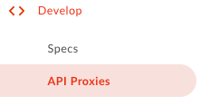
Click on + Proxy:
Select ‘Hosted Target' and click ‘Next':
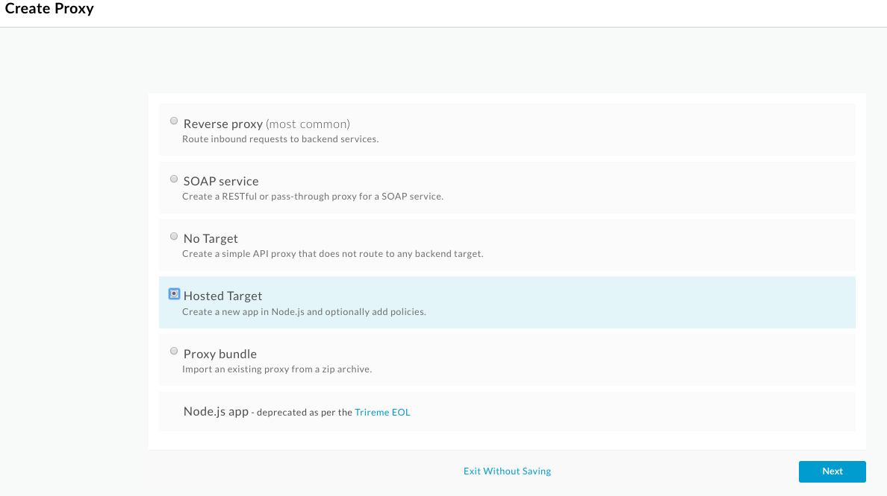
Enter the proxy basic details, make sure to select the ‘Hello World Sample' option:
Name | HostedNode |
Proxy Base Path | /hostednode |
Source | "Hello World" Sample |
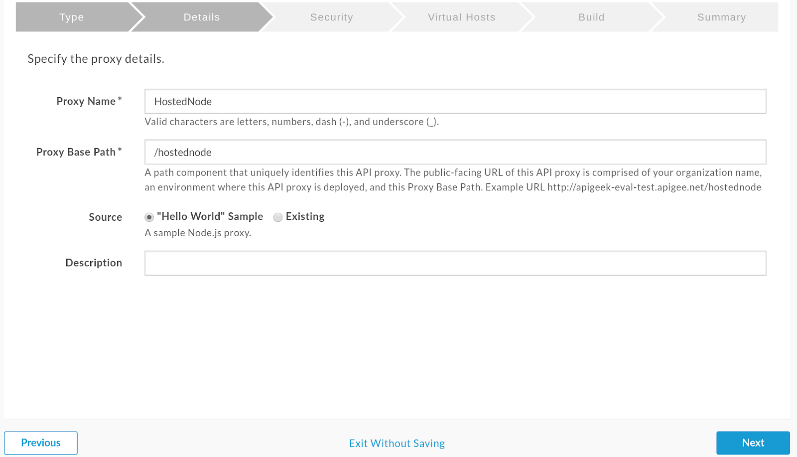
Select ‘Pass through' for authorization:
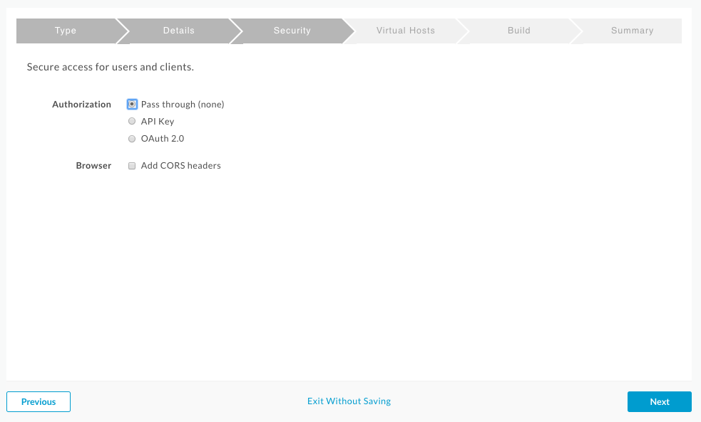
Only the ‘secure' virtual host should be selected
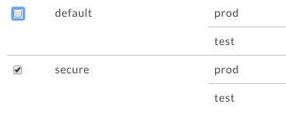
Select the environment ‘test' to deploy to and click on ‘Build and Deploy'
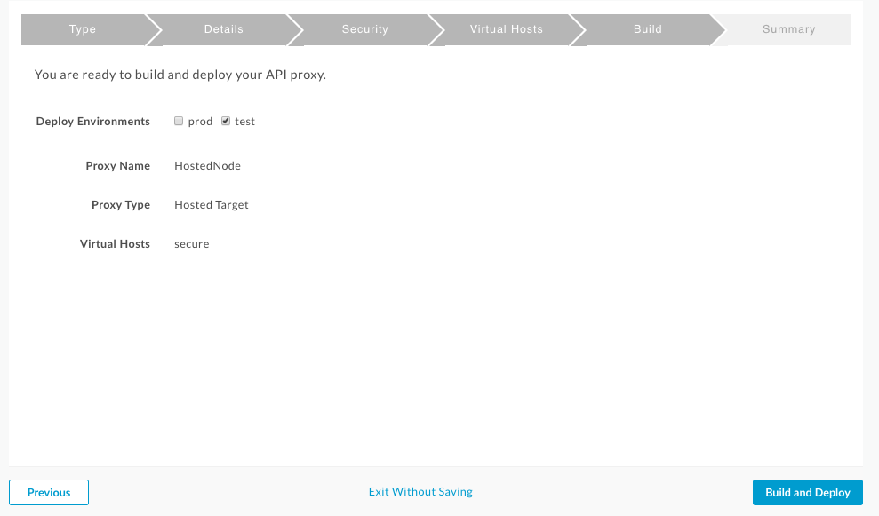
Once done, click on ‘View HostedNode' link at the bottom.
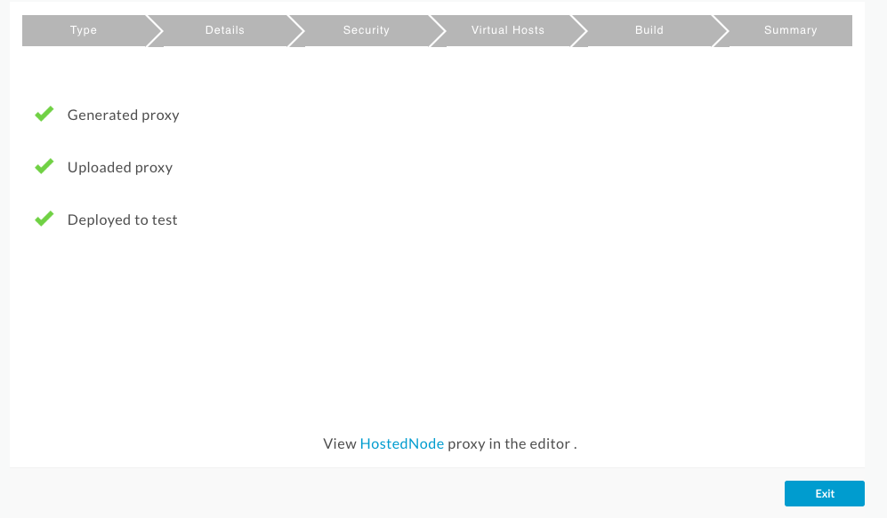
Once inside the new proxy, click on the ‘Develop' tab to see its details.
Go to Develop/API Proxies
Down on the left side, under Resources and in the hosted section, are all the configurations generated for the node.js application created. This will act as the backend target for the proxy created.
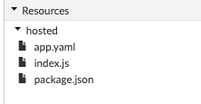
The main file in here is the index.js, which is basically the code for the application.
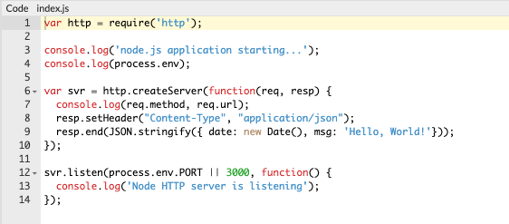
Package.json, as with other node apps, contains the list of all dependencies. As you create more elaborate apps, the list of required modules will go in this file.
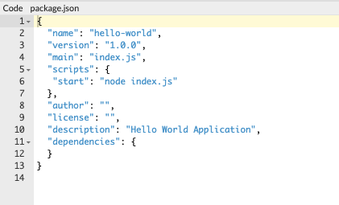
Finally, app.yaml is configuration specific to Google Cloud's App Engine. You should not have to modify this file. For more details on this, please refer to this doc.

Hosted Target proxies can be invoked and traced the same way as other proxies running on Apigee.
One difference is that node.js applications have the option to logging details to the ‘console'.
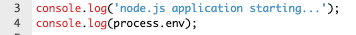
If you go to the ‘Trace' tab, and start a new trace session, you can start exploring the new proxy and how the information can be viewed.
The response sent by the proxy will be:
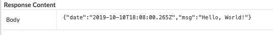
And if you check at the top, you'll find two other buttons related to the logs generated:
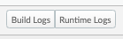
Build Logs
For every time the proxy is modified and/or deployed, you should see updates to the build logs. You'll only see the most recent build.
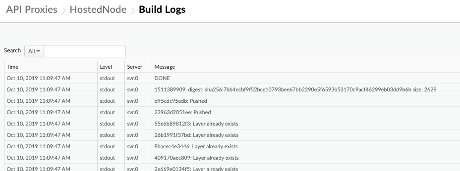
Runtime Logs
Runtime logs will get updated every time the app starts, stops and for every new request. Also if there's any entries being logged to the console, they will be captured in thus log:
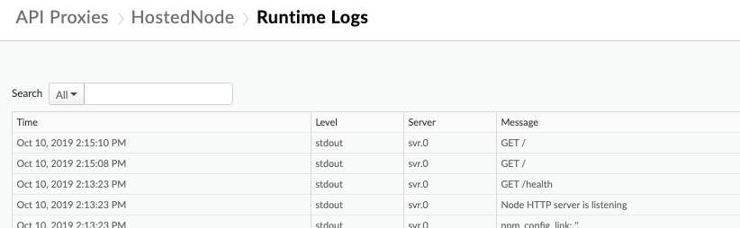
You have successfully created hosted target proxy. For more in-depth information, refer to Apigee's documentation on Hosted Targets and for details on how to deploy the proxy from your system directly, please refer to this session.